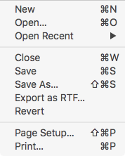

Open a Document
You can open an existing document in order to Tidy it by following these simple simple steps, below.
-
Use the Open… menu item in the File menu. 
-
Or, Drag a file in Finder to Balthisar Tidy for Work’s icon in the Dock.
-
Or, Create an AppleScript program to tell Finder to open a file with Balthisar Tidy for Work.